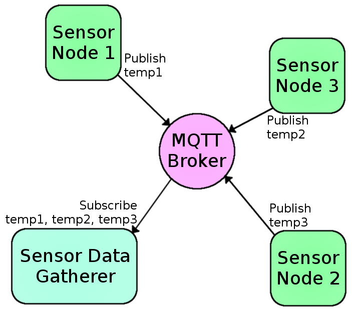

Wireless Warmup!
Solder 2 header pins to the ends of the battery clip wires
ADXL345: GND->GND 3v3->3v SDA->SDA SCL->SCL
Battery: black->GND red->BAT
Download OSC Library
Remove -master from filename
Place in Documents/Arduino/Libraries
Open ADLosc in Arduino
Set up computer IP address on line 26
Upload using Adafruit Huzzah board settings
cd osc_simple
npm install
node app.js
cd osc_threejs
npm install
node app.js
localhost:3000 in browser
keep this circuit, we will return to it.
- 3 types of Outputs
- Numeric
- Classification
- Dynamic time warping
- Continuous Model
Numeric outputs: These are numeric values. There are two types of numeric outputs:
- Real-valued (“continuous”) numeric outputs can take on any number value (possibly limited to a certain range). For example, you might want to control “audio gain” with a real-valued output limited between 0 and 1. This is the default output type in Wekinator.
- Integer-valued numeric outputs can take on any integer value (possibly limited to a certain range). For example, you might want to control “MIDI pitch” with an integer-valued output between 0 and 127.
- Classification Model
Classification outputs: These are discrete categories, such as “Position 1”, “Position 2,” “Position 3.” You’ll need to tell Wekinator how many categories to use. Wekinator will send outputs as numbers, such as “1,” “2,” “3” for categories 1, 2, and 3. Wekinator will attempt to categorize every new input you send it.
- Classification Model
- Dynamic Time Warping
Dynamic time warping event outputs: Use this output type when you want Wekinator to recognize patterns over time. For instance, you might want to play one note every time you draw a circle in the air with your hand, and another note every time you draw a square. If you’re not drawing either one, or if you’re in the middle of drawing, you don’t want anything to happen. That is, you want Wekinator to look for a particular pattern (or multiple patterns) of how the inputs are changing over time, and tell you when a pattern is spotted and which one it was.
- Dynamic Time Warping
Lets use it with the ESP..


brew install mosquitto
run mosquitto from terminal
Open 2 terminals
In the first type: mosquitto_sub -h 127.0.0.1 -t topic
In the second type: mosquitto_pub -h 127.0.0.1 -t topic -m "message"
Public MQTT Server
In the first type: mosquitto_sub -h ec2-35-161-110-220.us-west-2.compute.amazonaws.com -t /test
In the second type: mosquitto_pub -h ec2-35-161-110-220.us-west-2.compute.amazonaws.com -t /test -m "message"
Install Arduino MQTT Library
Upload mqtt_neopixels
mosquitto_pub -h ec2-35-161-110-220.us-west-2.compute.amazonaws.com -t /test -m "1"
cd ws_mqtt_express, run node index.js
cd speak_mqtt, run node index.js